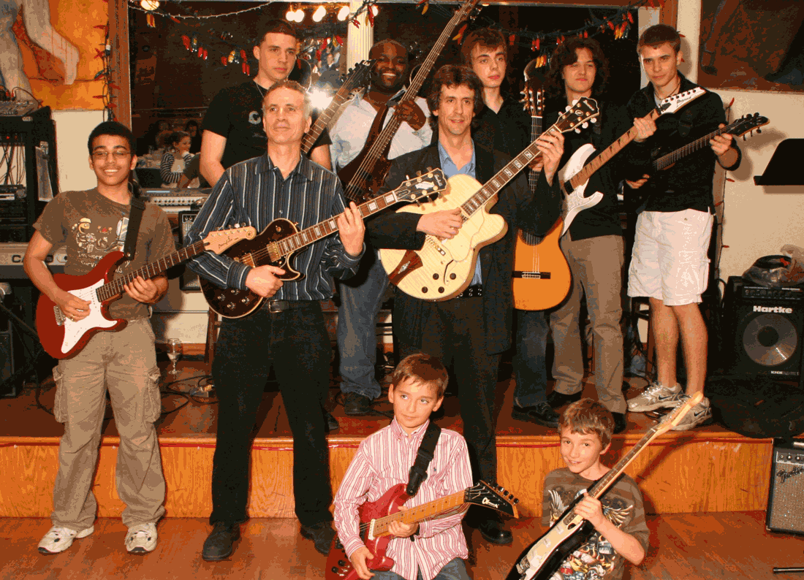

Does the idea of a "One Size Fits All" music lesson sound boring? A person's musical needs cannot be satisfied with this approach. Over the course of 29 years I invented and have been refining my revolutionary Kwikstep Method. It incorporates a positive atmosphere while achieving unbelievably fast results. Before the Kwikstep method I called it the "aspirin in the bread" approach. Music reading, theory and technique are all developed through much of the music that the student selects. The KwikStep Method specifically targets the individual. Your level of interest, type of music and ability are all extremely important in attaining the best possible results. I've not even mentioned what I consider to be the single most essential ingredient in gaining the greatest success...
Confidence is paramount in achieving a winning attitude! The first step in encouraging confidence is to diminish any amount of anxiety or lack of confidence the student may have. When a student or parent of a student tells me they've never played before, my response is "That's The Best Thing You've Got Going For you." I suggest that any student relax and do what comes naturally.
One of the reasons some teachers would rather not deal with beginners is that they feel it takes too long to realize tremendous results. The second is it's difficult for the teacher to remember what it was like to be a beginner all those years ago.
The next thing is ever more crucial to development. Often times a student will take lessons so they can play their favorite song or a particular style of music that they enjoy. I try to create excitement by asking a student to make a list of 10 songs of any style of music that they would like to play. It never ceases to amaze me how often a teacher is surprised when a student lacks interest in the lessons. It's the teacher's responsibility to interest the student and not the other way around.